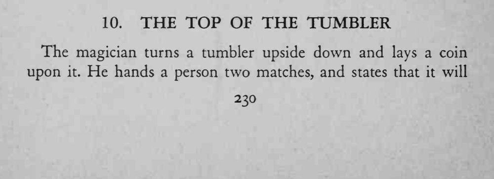
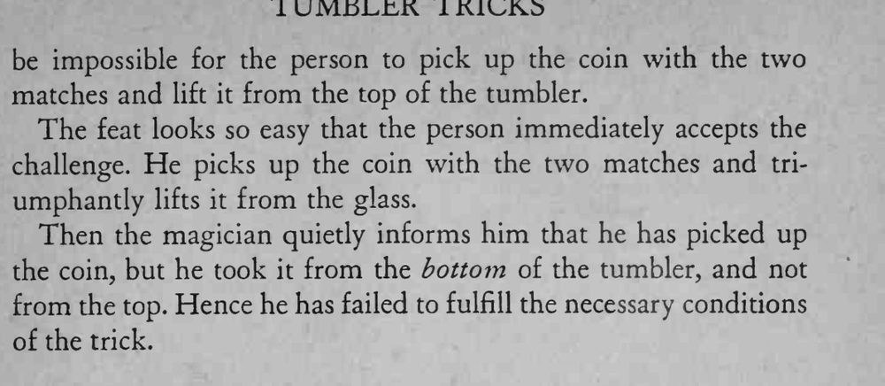

硬币放在倒扣的杯顶上，观众用两根火柴把硬币夹了起来，却仍算没完成。
一定要在观众动手前把条件说清楚，揭底时语气要轻松。


The magician turns a tumbler upside down and lays a coin upon it. He hands a person two matches, and states that it will be impossible for the person to pick up the coin with the two matches and lift it from the top of the tumbler. The feat looks so easy that the person immediately accepts the challenge. He picks up the coin with the two matches and triumphantly lifts it from the glass. Then the magician quietly informs him that he has picked up the coin, but he took it from the bottom of the tumbler, and not from the top. Hence he has failed to fulfill the necessary conditions of the trick.